I have been reading Doom Guy by John Romero. It is an excellent book which I highly recommend. In the ninth chapter, John describes being hit by lightning upon seeing Adaptive Tile Refresh (ATR). That made me realize I never took the time to understand how this crucial piece of tech powers the Commander Keen (CK) series.
During my research I was surprised to learn that ATR only powered the first CK trilogy. The second trilogy turned out to use something far better.
Commander Keen ran at its best on a PC equipped with a Enhanced Graphic Adapter (EGA) card. On these machines, graphic programming is done through a set of registers for configuration and a window of 64KiB memory mapped[1] to the Video RAM (VRAM) to plot pixels. Internally the EGA stores data in four planes named C0, C1, C2, and C3[2]. From the banks, bytes are picked up by the screen controller and sent to the monitor.
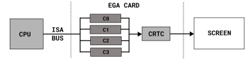This design involving four banks may seem bizarre but this was the only way to reach the bandwidth necessary to keep with the screen (CRT). No chip was fast enough so IBM designers made the controller (CRTC) read four bytes in parallel.
The EGA CRTC does not expect RGB values to generate pixels. Instead it is based on a palette system. Several modes offer various resolutions and colors. In its mode Dh[3], which is what CK uses, the resolution is 320x200 16 colors[4].
| 0x0 | 0x1 | 0x2 | 0x3 | 0x4 | 0x5 | 0x6 | 0x7 | 0x8 | 0x9 | 0xA | 0xB | 0xC | 0xD | 0xE | 0xF |
| M |
In mode 10h, which CK does NOT use, the palette indices (pens) can be reconfigured to use different colors (inks). Each pen can point to an ink from a set of 64 predefined values.
| 0x0 | 0x1 | 0x2 | 0x3 | 0x4 | 0x5 | 0x6 | 0x7 | 0x8 | 0x9 | 0xA | 0xB | 0xC | 0xD | 0xE | 0xF | |
| 0x00 | M | |||||||||||||||
| 0x10 | M | |||||||||||||||
| 0x20 | M | |||||||||||||||
| 0x30 | M |
Trivia: In mode Dh, the palette colors can still be reconfigured but only from the default 16 colors. This is how CK implements its crude fade in/out effect.
Each bank stores a plane of a nibble (4-bit). C0 stores all LSB of each nibble. C3 stores all MSB of each nibble. And so on... As an example, the first byte in C0 stores the LSB of the eight first pixel on the screen.
A full screen requires 320x200/2= 32,000 bytes of VRAM. Each bank/plane stores 200 lines made of 40 bytes each.
At its heart the problem ATR solves is bandwidth. Writing 320x200 nibbles (32 KiB) per frame is too much for the ISA bus. There is no way to maintain a 60Hz framerate while refreshing the whole screen. If we were to run the following code, which simply fills all banks, it would run at 5 frames per seconds.
byte* vram = 0xA0000000L; for (int bank_id = 0 ; bank_id < 4 ; bank_id++) { select_bank(bank_id); for (int i = 0; i < 40 * 200; i++) { vram[i] = 0x0; } }
Trivia: Connoisseurs will point out there are ways for the EGA to write to all four banks simulaneously. These can help to clear the screen or in the case of Wolfenstein 3D duplicate columns. They don't help for Commander Keen.
The best way to understand ATR is to build it from scratch, introducing EGA registers as we need them. Let's start by displaying a static image. We set the EGA in mode Dh, pick an address in VRAM, fill it with nibbles, and then use the "CRTC Start" register so the CRTC knows where to start reading from.
Trivia: There is no single CRTC start address register. Instead a developer must use two registers named "Start Address High" (0CH), and "Start Address Low" (0DH). For simplicity, we treat it as if it was a single one and call it CRTC_START.
Now we are going to add smooth scrolling. The goal is to create a system where the image displayed on the screen can be shifted with an EGA register (cheap) without plotting a single pixel (expensive).
Let's start with smooth vertical scrolling. If we allocate more memory than is displayed, we create a virtual screen in VRAM. We can add 16 lines above and 16 lines below. Instead of 40x200 = 8,000 bytes per plane, we now used 40 x 232 = 9,280 bytes per plane.
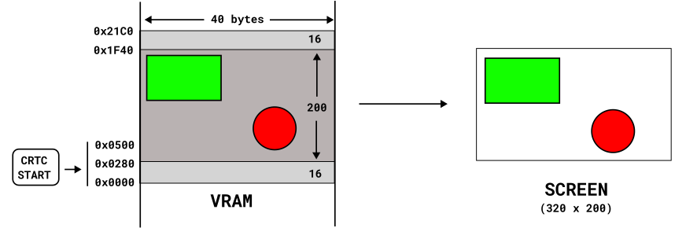To move the displayed image up by a line, we can just increase the CRTC_START register by 40 bytes.
To move the displayed image down by a line, we can just decrease the CRTC_START register by 40 bytes.
The renderer now needs to write a few more lines to VRAM but the cost is amortized. The gain is that we can update the CRTC_START address up or down in the virtual screen to smoothly move the displayed image up or down.
The previous trick allows smooth vertical scrolling. However the truly impressive part, the one John Romero raves about in his book, is smooth horizontal scrolling.
At first sight, it does not look like we can use the same trick since all lines are contiguous in VRAM (there is no space between them). But the EGA has a register to allow padding between lines. With the OFFSET register set to 2 we add 16 bytes of padding which results in 16 extra pixels on the left and 16 extra pixels on the right in the virtual screen[5].
However this is not enough for the scrolling to be smooth. If we change the CRTC start address, we have to remember that nibbles are stored in planes. Increasing CRTC_START by 1 moves the screen horizontally by 8 pixels (four banks each containing 2 pixels per byte). This is coarse, not smooth.
The last register involved in ATR is called "Horizontal Pel Panning" (we will call is PEL). It accepts 4 bits to tell the CRTC to skip up to 7 bits from CRTC_START before using nibbles. This is exactly what we need for smooth horizontal scrolling.
Each movement left or right is done with a CRTC_START register update (for coordinate / 8). Then the move is fine tuned with the PEL register (for coordinate % 8).
So far, we have built a virtual screen in VRAM allowing 16 smooth one pixel moves in both axes using only EGA registers. But what happens when we reach an edge? That's where the innovation, and what left John Romero speechless for 30 minutes, starts.
As John Carmack explained[6], once it reaches an edge, the virtual screen must be reset. And it cannot be a full screen redraw because it would take 200ms and drop framerate to 5fps. This operation, coined "jolt" by knolo in their excellent explanation[7], involves collaboration from the game designers.
CK levels are built with tiles of dimension 16x16. Upon being drawn by artists, the build system give them an unique ID. A level design creates a map by placing tile IDs in a 2D editor. CK engine keeps track of which tile IDs are in the virtual screen. Since the engine only jolts at tiles size granularity, it can determine extremely fast what has changed on the screen by comparing IDs.
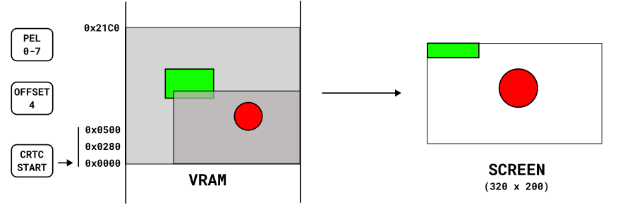 Before the joltNotice how, before the jolt, the CRTC starts at the botton of the virtual screen. The image displayed on the screen has not changed between before and after. However the virtual screen has been "re-centered".
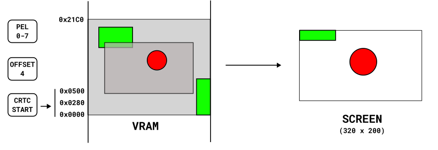After the joltTo jolt, the engine compares each tile ID in the virtual screen current state and the desired, re-centered, state. For matching tiles there is nothing to do and they are skipped entirely. Only mismatch incur a CPU penalty because these need to be overwritten in VRAM.
This is the part where CK game designer had to help the engine with. The jolt efficiency is inversely proportional to the number of tiles to redraw. To avoid costy jolts, designers built tile-maps so there would be a lot of reperating tiles.
In the following screenshot of Commander Keen 1, the player smoothly moved to the right until it ran out of virtual screen. A 16 pixels left jolt occurs. We can see the small number of tiles which were overwritten.
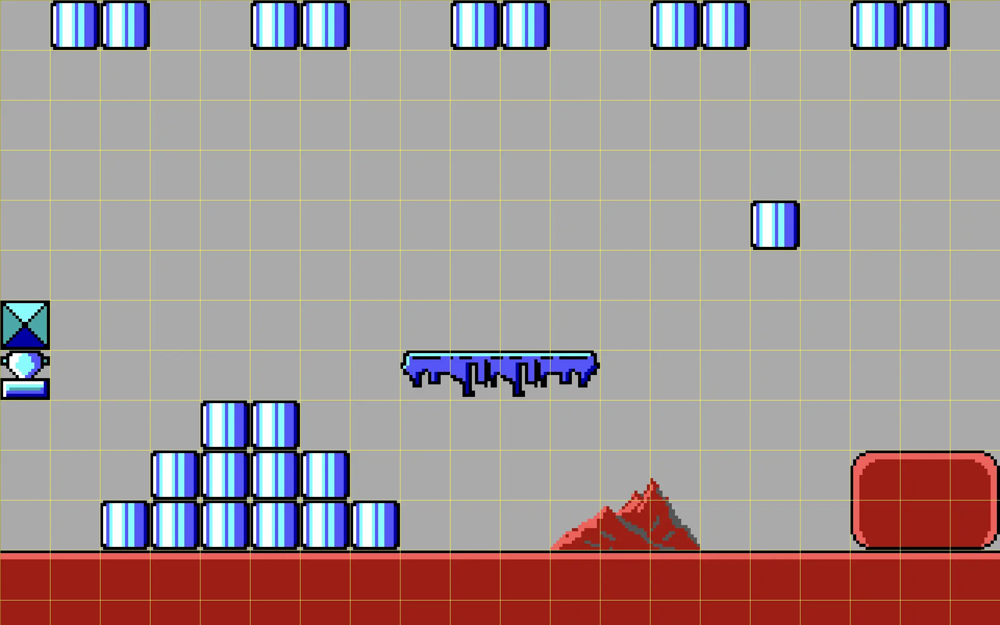
Only 40 tiles have changed (in pink) out of 250. The amount of redraw is just 16% of the whole screen.
So far we have only discussed how the background (made of tiles) is rendered and smoothly scrolled. CK draws a layer of sprites on top of it. While it renders the sprites layer over the background tile layer, the engine maintains a list of dirty (overwritten) tile coordinates. Each new frame, the dirty list is traversed, the background tiles are restored, and then the sprites are drawn again. Rinse, repeat.
To avoid visual artifacts, the whole system is duplicated via two framebuffers. While an image is read by the CRTC, another can be written elsewhere in VRAM. Each buffer uses (320 + 32) * (200 + 32) * 4 / 8 = 40,832 bytes. With double buffer, the total is 40,832 * 2 = 81,664 bytes. This is way past the capacity of the standard set by IBM original EGA graphic card. But it was not a problem.
Only the original IBM EGA board ever shipped with 64KiB, and it was a clunky beast full of discrete components, which required daughter-boards for VRAM expansion.
The EGA clones that started coming along in ~1986-7 were based on integrated chipsets (like the one from Chips & Technologies), and the vast majority of them came with 256K on board. When Commander Keen came out, the headcount of EGA cards with less than 256K 'in the wild' would've been practically negligible.
Trivia: How to manage 256 KiB of VRAM with only a 64 KiB window? Not a problem since the banks contain 64 KiB each. The CPU can still "see" everything via the plane mask (selection) register.
Knowing how ATR works, and how it depends on repeating tiles, we should be surprised to see the difference between the first and second trilogy screenshots.
| 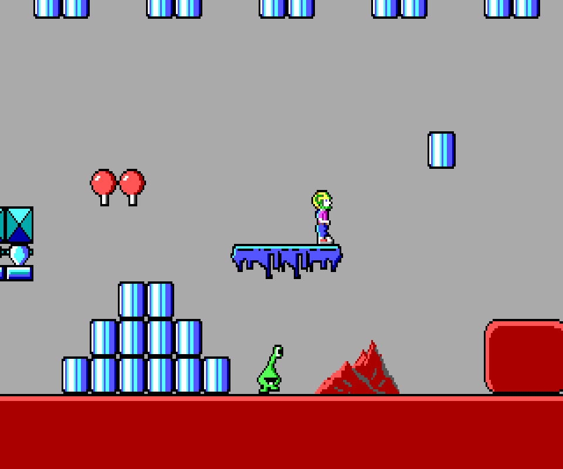 | 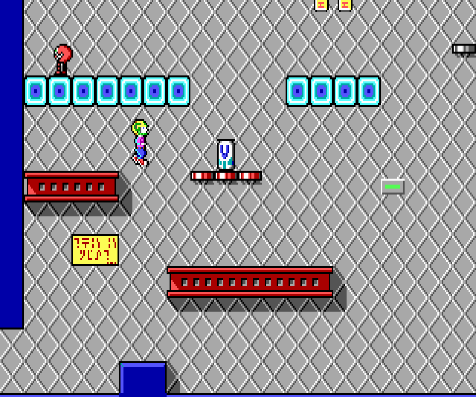 | 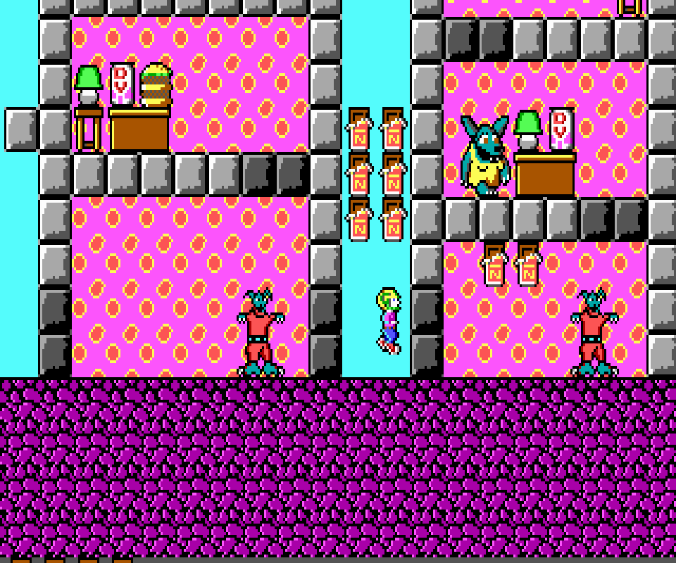 |
If Commander Keen 1, 2, and 3 show the characteristic repeating patterns required by ATR, the second trilogy, made of Commander Keen 4, 5, and 6, does not. It is most apparent with the starting forest of CK 4 where next to nothing is repeating except for the marginal underground.
| 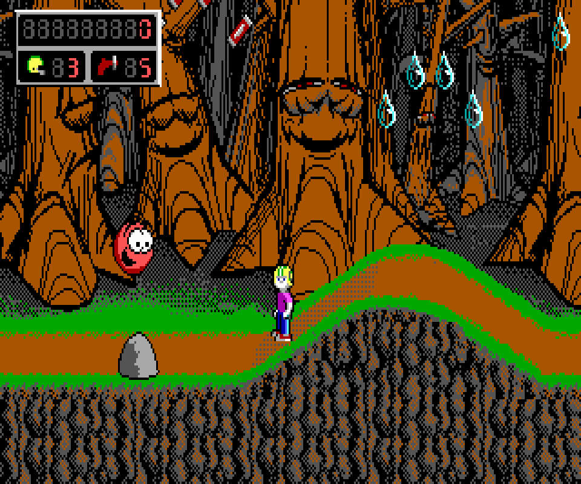 | 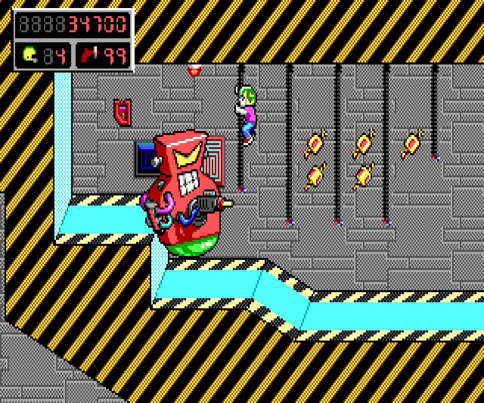 | 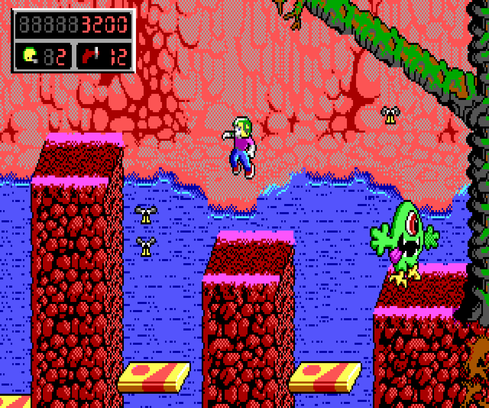 |
How did they pull that off? John Carmack alluded to the answer on his Twitter account in 2020[11].
The second Keen trilogy used a better trick -- just keep panning and redrawing the leading edge, letting the screen wrap around at the 64k aperture edge.
- John Carmack
An explanation further elaborated during an interview with Lex Fridman in 2022[12].
I finally asked what actually happens if you just go off the edge [OF THE VRAM]?
If you take your [CRTC] start and you say OK, I can move over and I get to what should be the bottom of the memory window. [...] What happens if I start at 0xFFFE at the very end of the 64k block? It turns out it just wraps back around to the top of the block.
I'm like oh well this makes everything easy. You can just scroll the screen everywhere and all you have to draw is just one new line of tiles.
It just works. We no longer had the problem of having fields of similar colors. It doesn't matter what you're doing, you could be having a completely unique world and you're just drawing the new strip.
- John Carmack
So there we have the explanation. ATR was improved upon not by adding a feature but by removing one. Without the jolt, the CRTC start address drift in VRAM space until it wraps around the 64KiB space of the banks. Since it happens with both elements of the double buffer, they drift at the same speed and never overlap. It worked well most of the time.
This is so simple, it just works and it's faster. It seemed like there was no downside.
Funny thing was it turned out, after we shipped titles with this, there were super vga cards, allowing higher resolutions and different features that the standard ones didn't.
On some of those cards there was a weird compatibility quirk again because nobody thought this was what it was designed to do and some of those cards had more memory. They had more than just 256k and four planes they had 512k or a megabyte and on some of those cards I scroll my window down and then it goes into uninitialized memory that actually exists instead of wrapping back around at the top!
I was in a tough position. Do I have to track every single one of these [SUPER VGA CARDS] and it was a madhouse back then with 20 different video card vendors with all slightly different implementations of their non-standard functionality. Either I needed to natively program all of the cards or I kind of punt. I took the easy solution of when you finally did run to the edge of the screen I accepted a hitch and just copied the whole screen up.- John Carmack
This technique likely prevented tiles and sprites to be stored in VRAM (to use the fast 32-bit at a time VRAM to VRAM copy method popularized by Michael Abrash). But since very little has to be drawn each frame, it probably did not matter.
| ^ | [ 1] | EGA memory map [0xA000:0000, 0xA000:FFFF]. |
| ^ | [ 2] | IBM, Enhanced Graphics Adapter: 16/64 Color Graphics Modes (Mode 10) |
| ^ | [ 3] | Dh == 0xD but it feels more oldschool to write with the H> prefix. |
| ^ | [ 4] | EGA: Video Memory Layouts |
| ^ | [ 5] | Michael Abrash's Graphics Programming Black Book, Chapter 23 |
| ^ | [ 6] | The trick behind the scrolling in the first Commander Keen... |
| ^ | [ 7] | What is 'Adaptive Tile Refresh' in the context of Commander Keen? |
| ^ | [ 8] | PC Tech Journal Oct 1986, part 1 |
| ^ | [ 9] | PC Tech Journal Nov 1986, part 2 |
| ^ | [10] | Commander Keen in Keen Dreams source code |
| ^ | [11] | The second Keen trilogy used a better trick |
| ^ | [12] | The secret to Commander Keen: Side scrolling explained |
{kind=link}
{kind=link}
{kind=link}
{kind=link}
{kind=link}
{kind=link}